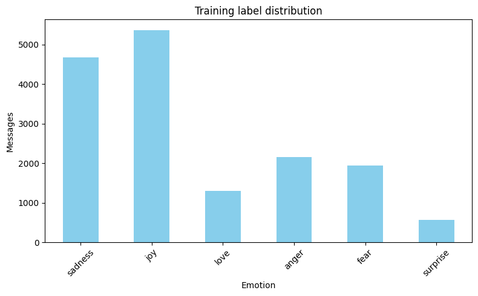
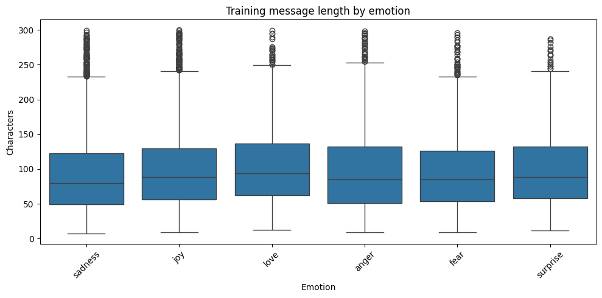

MoodMate: Six-Class Emotion Classification
MoodMate is a collaborative NLP and machine learning project exploring the classification of short text into six emotions: sadness, joy, love, anger, fear, and surprise. This notebook compares Logistic Regression, Multinomial Naive Bayes, and Random Forest using TF-IDF features.
Exploratory analysis
Examine the distribution of emotion labels and message lengths in the training split. Numeric labels follow the mapping defined above.

Text features
TF-IDF represents each message as a sparse vector of weighted terms. The vectorizer is fitted only on training text, then applied unchanged to validation text to avoid vocabulary leakage. English stop-word removal is retained from the original experiment; it can discard useful context, including negations, and was not separately tuned.
Training matrix shape: (16000, 14894)
Validation matrix shape: (2000, 14894)
Sample vocabulary: ['aa' 'aaaaaaand' 'aaaaand' 'aaaand' 'aac' 'aahhh' 'aaron' 'ab' 'abandon'
'abandoned']The original run produced a 16,000 × 14,894 training matrix and a 2,000 × 14,894 validation matrix. Each row represents a message and each column a term learned from training data.
Logistic Regression
Train a linear classifier on TF-IDF features and report per-class precision, recall, and F1-score on the validation split.
Accuracy: 0.8745
Detailed scores:
precision recall f1-score support
0 0.88 0.94 0.91 550
1 0.86 0.95 0.90 704
2 0.90 0.70 0.78 178
3 0.90 0.85 0.88 275
4 0.87 0.74 0.80 212
5 0.85 0.65 0.74 81
accuracy 0.87 2000
macro avg 0.88 0.80 0.83 2000
weighted avg 0.88 0.87 0.87 2000
Original validation accuracy: 87.45%. The classification report shows lower recall for less frequent classes, especially surprise. Precision measures the correctness of predicted labels, recall measures coverage of true labels, and F1 balances the two.
Multinomial Naive Bayes
Compare a probabilistic text-classification baseline using the same TF-IDF features. The original model predicted no validation examples of class 5 (surprise), making its precision mathematically undefined. zero_division=0 explicitly reports this as 0; it does not fix the underlying failure. Inspect class-level recall rather than accuracy alone.
Naive Bayes Accuracy: 0.681
Naive Bayes Detailed Scores:
precision recall f1-score support
0 0.66 0.93 0.77 550
1 0.65 0.97 0.78 704
2 1.00 0.07 0.13 178
3 0.97 0.34 0.50 275
4 0.95 0.28 0.44 212
5 0.00 0.00 0.00 81
accuracy 0.68 2000
macro avg 0.71 0.43 0.44 2000
weighted avg 0.73 0.68 0.61 2000
Original validation accuracy: 68.10%. The original classification report records zero recall for surprise (class 5), and much lower recall for several minority classes. The historical warning messages are omitted because the reporting behavior is now explicit.
Random Forest
Fit the original 100-tree Random Forest using the same training-only TF-IDF representation.
Random Forest Accuracy: 0.8985
Random Forest Detailed Scores:
precision recall f1-score support
0 0.92 0.92 0.92 550
1 0.90 0.93 0.91 704
2 0.86 0.80 0.83 178
3 0.93 0.87 0.90 275
4 0.85 0.88 0.87 212
5 0.86 0.79 0.83 81
accuracy 0.90 2000
macro avg 0.89 0.87 0.88 2000
weighted avg 0.90 0.90 0.90 2000
Interpretation and limitations
Original validation accuracies: Logistic Regression 87.45%, Naive Bayes 68.10%, and Random Forest 89.85%. Random Forest performed best on this validation split. These are historical saved outputs, not fresh verification.
- The label distribution is uneven; accuracy should be considered alongside per-class precision, recall, and F1.
- The companion
randomForest.ipynbexplores CountVectorizer and TF-IDF Random Forest variants with a separate held-out test split.